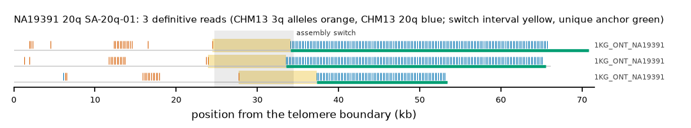

NA19391 20q: SA-20q-01
Claim NA19391|20q|SA-20q-01. All claims
- cohort
- 1000 Genomes ONT
- individual
- NA19391
- haplotype
- both (homozygous)
- arm
- 20q
- allele
- SA-20q-01 (foreign)
- model
- donor CHM13 3q, proximal CHM13 20q, recipient CHM13 20q, pattern DP
- claimed end(s)
NA19391#1#CM087799.1#R,NA19391#2#CM087813.1#R- assembly switch
- 33,256 bp from the telomere boundary; on CHM13 chr20:66177732; own-window projection 24700-34500 bp
- v1 verdict
- confirmed (confirmed)
- definitive tier
- definitive
- reads
- 3 conclusive switch-concordant, 0 discordant, 0 contradicting, 0 consistent; 3 definitive (1KG_ONT_NA19391)
- by tier
- definitive:3
- source
- https://ftp.1000genomes.ebi.ac.uk/vol1/ftp/data_collections/1KG_ONT_VIENNA/t2t/NA19391.t2t.cram
- note
- confirmed:robust; keep

Conclusive and contradicting reads (3)
0 further reads are consistent (switch test passed, but no terminal telomere, anchor or integrity); they are
listed in reads.tsv.gz. Switch: 95% interval in subtelomere coordinates (kb from the
telomere boundary) and projected on CHM13 20q. Each samtools command prints the read's record
from its public file (CRAM: add the CHM13 v2.0 FASTA as -T).
| read | dataset | tier | length | switch (subtelomere, kb) | switch on CHM13 | donor units / purity | proximal units / purity | anchor (CHM13, MAPQ, unique) | own-assembly best end | fetch |
|---|---|---|---|---|---|---|---|---|---|---|
48772000-d82a-4749-9f38-86f41bcfa48d | 1KG_ONT_NA19391 | definitive | 77,172 | 24.5-34.1 | chr20:66176516-66186116 | 18 / 1.00 | 159 / 1.00 | chr20:66139562-66176516, 60, 28.7 kb | NA19391#1#CM087799.1#R (97.2%) ✓ | samtoolssamtools view -F 0x900 -T chm13v2.0.fa.gz -X 'https://ftp.1000genomes.ebi.ac.uk/vol1/ftp/data_collections/1KG_ONT_VIENNA/t2t/NA19391.t2t.cram' 'https://ftp.1000genomes.ebi.ac.uk/vol1/ftp/data_collections/1KG_ONT_VIENNA/t2t/NA19391.t2t.cram.crai' 'chr20:66205256-66210255' | awk -v r='48772000-d82a-4749-9f38-86f41bcfa48d' '$1==r' |
5ee9ed9a-aacb-4e46-bd7b-5e4c985bc3a4 | 1KG_ONT_NA19391 | definitive | 71,950 | 23.9-33.5 | chr20:66176512-66186112 | 15 / 1.00 | 159 / 1.00 | chr20:66144302-66176513, 60, 23.9 kb | NA19391#2#CM087813.1#R (97.5%) ✓ | samtoolssamtools view -F 0x900 -T chm13v2.0.fa.gz -X 'https://ftp.1000genomes.ebi.ac.uk/vol1/ftp/data_collections/1KG_ONT_VIENNA/t2t/NA19391.t2t.cram' 'https://ftp.1000genomes.ebi.ac.uk/vol1/ftp/data_collections/1KG_ONT_VIENNA/t2t/NA19391.t2t.cram.crai' 'chr20:66205256-66210255' | awk -v r='5ee9ed9a-aacb-4e46-bd7b-5e4c985bc3a4' '$1==r' |
34b9d490-f15e-4b1a-a42b-1d97388da838 | 1KG_ONT_NA19391 | definitive | 54,953 | 27.7-37.3 | chr20:66176389-66185989 | 15 / 0.93 | 80 / 1.00 | chr20:66159909-66176388, 60, 8.3 kb | NA19391#2#CM087813.1#R (93.0%) ✓ | samtoolssamtools view -F 0x900 -T chm13v2.0.fa.gz -X 'https://ftp.1000genomes.ebi.ac.uk/vol1/ftp/data_collections/1KG_ONT_VIENNA/t2t/NA19391.t2t.cram' 'https://ftp.1000genomes.ebi.ac.uk/vol1/ftp/data_collections/1KG_ONT_VIENNA/t2t/NA19391.t2t.cram.crai' 'chr20:66205256-66210255' | awk -v r='34b9d490-f15e-4b1a-a42b-1d97388da838' '$1==r' |
Files
CRAM/BAM on CHM13 v2.0, BAM on the person's own assembly windows and the window FASTA: release asset subtel_read_evidence_v1_1KG_ONT.tar.gz, directory read_evidence_v1/1KG_ONT/NA19391__20q__SA-20q-01/ (downloads).
Re-derive this verdict
git clone https://github.com/jlanej/human-subtelomere-atlas && cd human-subtelomere-atlas
evidence/replicate_claim.sh 'NA19391|20q|SA-20q-01'The script fetches the cited reads from the public source by region and read ID, re-runs the frozen criteria and compares every per-read and claim verdict with this page (details).